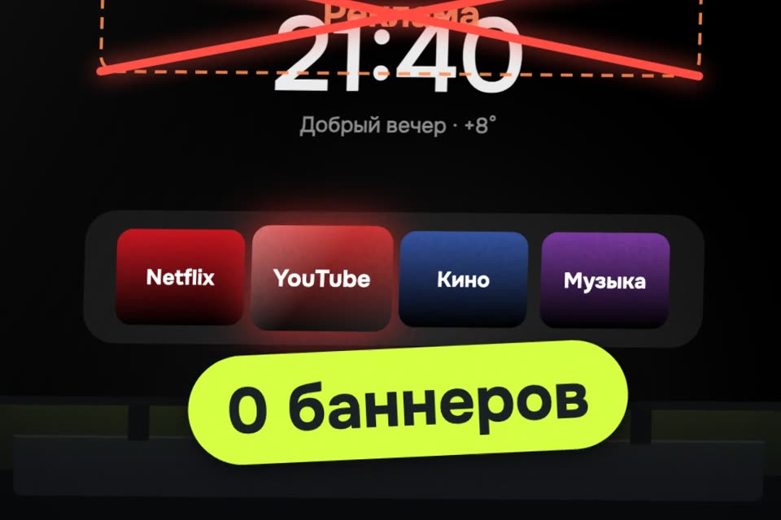

Телевизор LG или Samsung без рекламы
Так же, как с Android, не выйдет: внутри другая система. Но баннер на главном экране LG снимается за минуту, а свой чистый экран ставится как приложение.
- бесплатно
- ничего не перепрошивается
- удаляется одной командой
К ролику «А с WebOS так же можно?» · обновлено 27 октября 2026

Нужен компьютер в той же сети Wi‑Fi и Python 3. Подходят LG с webOS 3 и новее и Samsung с 2017 года. Родной экран с рекламой остаётся: Free My TV открывается кнопкой с цифрой на пульте.
LG: первый результат за 3 шага
Уберите баннер в настройках, без Claude
1 минута, ничего ставить не надо.
Пульт → кнопка настроек → Все настройки → Общие → Система → Дополнительные настройки → Настройки главного экрана.
- Home Promotion / Продвижение на главной → Выкл. Верхний рекламный баннер исчезает.
- Content Recommendation / Рекомендации контента → Выкл. Пропадают подборки «в тренде».
- Если есть Screen Saver Promotion (реклама перед заставкой), тоже Выкл.
Названия пунктов зависят от версии webOS. Узнать версию: трижды нажать «без звука» на пульте. Путь выше взят из справки LG для webOS 6 и webOS 22.
Верхний рекламный баннер и подборки «в тренде» пропадают с родного главного экрана.
Включите режим разработчика
Бесплатный, через него ставится свой экран.
- На телевизоре откройте LG Content Store и установите приложение Developer Mode. Если его нет в магазине вашего региона, способ не сработает.
- Войдите бесплатным аккаунтом webostv.developer.lge.com, включите Dev Mode Status (телевизор перезагрузится), потом Key Server. Запишите IP-адрес и пароль-фразу с экрана.
В приложении Developer Mode включены Dev Mode Status и Key Server, у вас записаны IP-адрес и пароль-фраза.
Поставьте Free My TV
Свой чистый главный экран, ставится как приложение.
Открытый проект под лицензией MIT: github.com/simbasjungles/free-my-tv, сайт freemytv.io. Тёмный экран с вашими приложениями, погодой и подборками, без рекламы. Ставится как приложение: родной экран остаётся, Free My TV открывается кнопкой с цифрой на пульте.
Что нужно: компьютер в той же сети Wi‑Fi, Python 3, по желанию Claude Code (можно и руками по README) и бесплатный ключ TMDB для подборок «в тренде» (themoviedb.org → Settings → API).
Скачайте проект на компьютер
git clone https://github.com/simbasjungles/free-my-tv
cd free-my-tvОткройте Claude Code в этой папке и скажите
Подставьте IP телевизора и свой город.
Install Free My TV on my LG TV at 192.168.1.50. I live in Moscow.Claude соберёт приложение и даст команду установки. Пароль-фразу вводите сами. Руками то же самое:
python3 webos/build.py
python3 webos/install.py 192.168.1.50Повесьте Free My TV на кнопку
На телевизоре, пока открыт Free My TV, зажмите кнопку с цифрой на пульте. Теперь она открывает его откуда угодно.
Тёмный экран с вашими приложениями, погодой и подборками, без рекламы. Кнопка с цифрой на пульте открывает его откуда угодно.
Удалить
python3 webos/install.py 192.168.1.50 --uninstallSamsung (2017 и новее, Tizen 3+)
Для Samsung проверенного пути в настройках у нас нет: меню меняется от года к году. Поэтому сразу свой экран.
- На телевизоре: Приложения → на пульте наберите
1 2 3 4 5→ включите Developer mode, в Host PC IP впишите IP компьютера, перезагрузите телевизор. - На компьютере скачайте TizenBrew Installer, сторонний общественный установщик: github.com/reisxd/TizenBrewInstaller. Подключитесь к телевизору.
- Install from GitHub →
simbasjungles/free-my-tv. На телевизорах 2023 года и новее один раз попросит войти в аккаунт Samsung, чтобы подписать приложение. - В настройках телевизора (Start Screen Options) включите Autorun Last App, чтобы он включался сразу в Free My TV.
Телевизор включается сразу в Free My TV.
Другие телевизоры
Android TV и Google TVTCL, Sony, Hisense, Philips, Xiaomi
Там можно больше: Free My TV становится главным экраном вместо родного и отключает рекламные приложения, кнопка «Original» возвращает всё. Это способ из ролика про телевизор родителей: github.com/Gathin23/cleanyourtv и free-my-tv#install.
Если застряли
В LG Content Store нет Developer Mode
Если приложения нет в магазине вашего региона, способ не сработает. Баннер из шага 1 всё равно снимается в настройках.
Free My TV пропал с телевизора LG
Скорее всего, кончилось время режима разработчика и телевизор перезагрузился: LG сам удаляет всё, что поставлено через режим разработчика. Включите режим заново (шаг 2), поставьте Free My TV ещё раз (шаг 3) и дальше раз в месяц жмите EXTEND.
Где не сработает
- LG старше webOS 3, Samsung старше 2017 года.
- Roku и другие системы без режима разработчика.
- Реклама внутри приложений (YouTube, онлайн-кинотеатры) никуда не денется: это другое.
- Родной экран с рекламой остаётся, Free My TV открывается поверх него. На LG режим разработчика надо продлевать раз в ~40 дней.
Источники: README free-my-tv, LG webOS TV Developer, справка LG «Changing home screen settings» для webOS 6 и webOS 22. Проекты не наши, спасибо авторам.